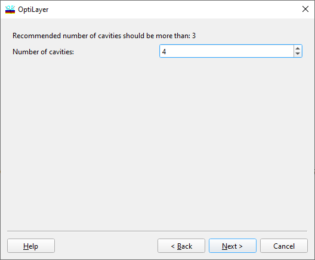

Filter Design - Number of Cavities
Filter Design - Number of Cavities
Navigation: OptiLayer Menu Commands > Synthesis Menu > Filter Design > Filter Design - Number of Cavities |
` <wdm_f ilter_design___filter_par.html>`__ ` <idh_menu_synthesis.html>`__ ` <wdm_f ilter_design___prototype_.html>`__ |

At the third step of the dialogue, you need to select the number of filter cavities. The recommended number, calculated based on the entered filter parameters, is displayed. See also: